09Nov
Lunes de oración
Culto de Oración y Petición
Lunes 9 de noviembre · 7:30 PM
¿Tienes una petición? Envíanosla y oramos por ti
En Iglesia Cuadrangular Galilea creemos en el poder transformador del amor de Cristo. Ven como eres, sal transformado. Te esperamos con los brazos abiertos.
Tres síntomas en un corazón desconectado
Cada domingo · 10:00 AM por YouTube
9:00 PM · Templo Galilea
Más detalles Próximo evento · Sábado 31 oct10:00 AM · Iglesia Cuadrangular Betel
Más detalles Próximo evento · Domingo 1 nov10:00 AM · Templo Galilea
Más detallesDesliza para ver lo que viene. Toca un afiche para verlo completo.
Lunes 9 de noviembre · 7:30 PM
¿Tienes una petición? Envíanosla y oramos por ti
Martes 10 de noviembre
¡Te esperamos, no faltes!
Viernes 13 de noviembre · 7:30 PM
En casas de hermanos en toda Milagro
Sábados 14 y 21 de noviembre · 7:30 PM
Tres síntomas de un corazón desconectado
Sábado 28 de noviembre · 10:00 AM
Iglesia Galilea · Rosa Borja de Icaza, entre Pablo Echavarría y Alfredo Adum
Domingo 6 de diciembre · Culto dominical 10:00 AM
Comunidades Sionas, Secoyas y Cofanes
Con tu ayuda, 700 niños recibirán un regalo especial
Todos los domingos · 10:00 AM
También en vivo por YouTube

Iglesia Cuadrangular Galilea nació con el propósito de compartir el amor de Jesucristo a través de una comunidad auténtica, cercana y llena de esperanza. Nuestra misión es ver vidas transformadas, familias restauradas y una generación que impacte al mundo con el evangelio.
Conócenos másAdoramos, servimos y salimos a las calles a compartir el amor de Jesús. Todo lo que hacemos busca guiar a las personas a una relación transformadora, primero con Dios y luego entre sí.
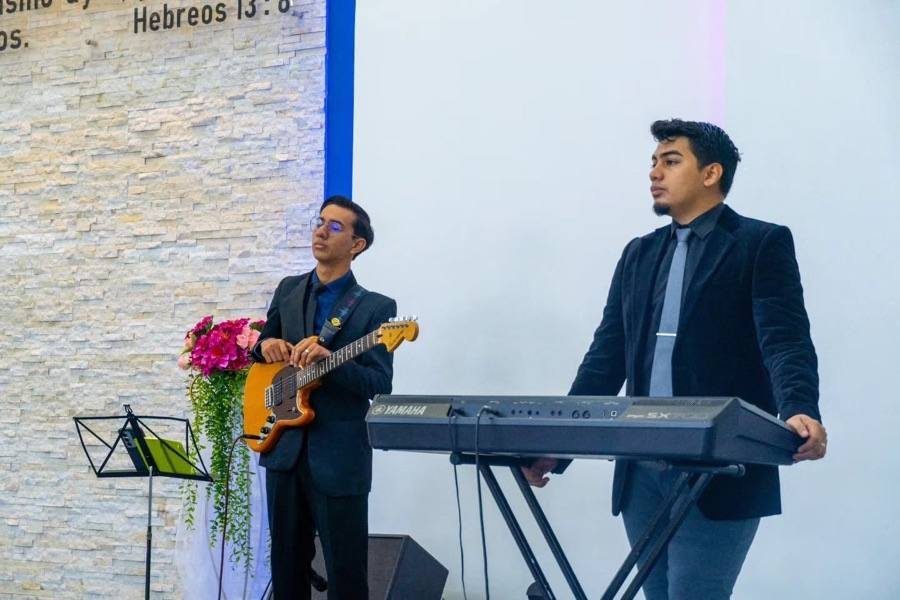

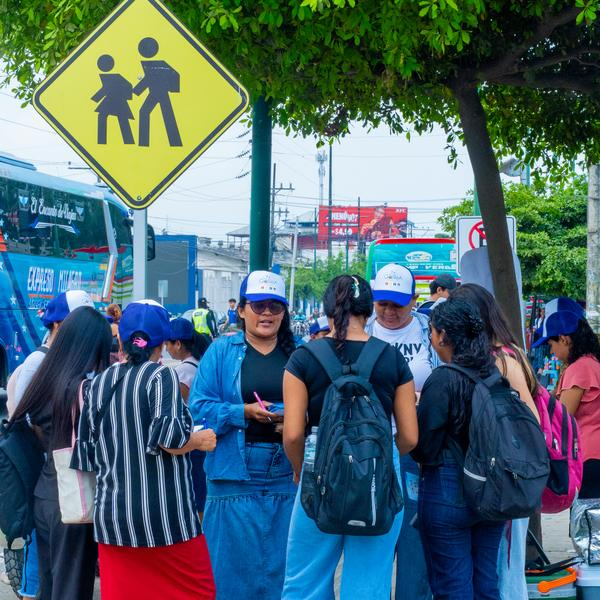
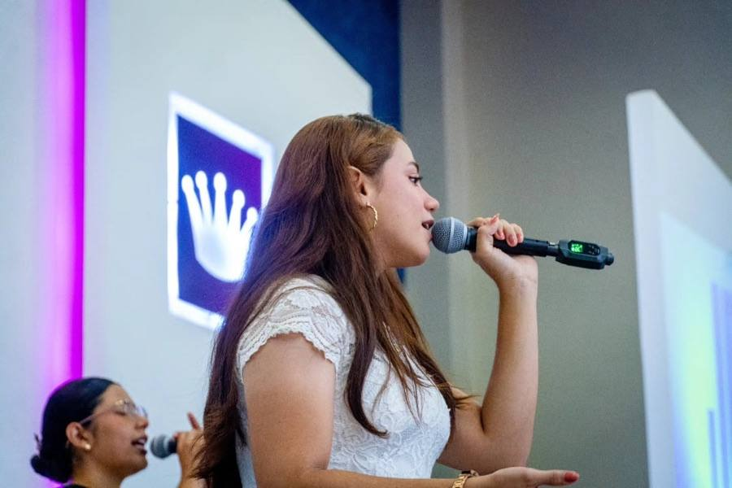


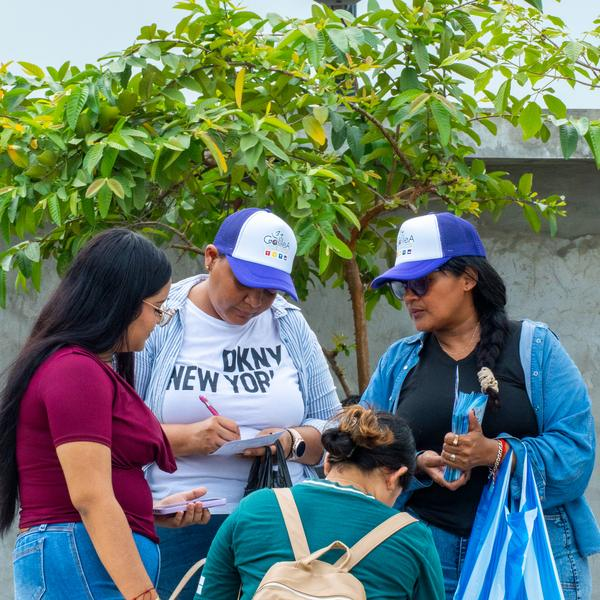

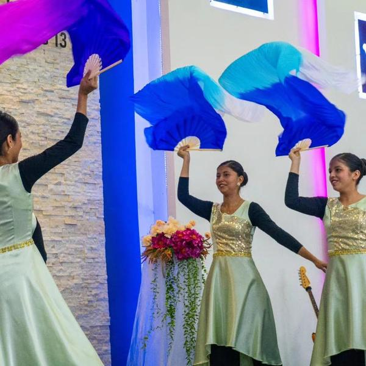
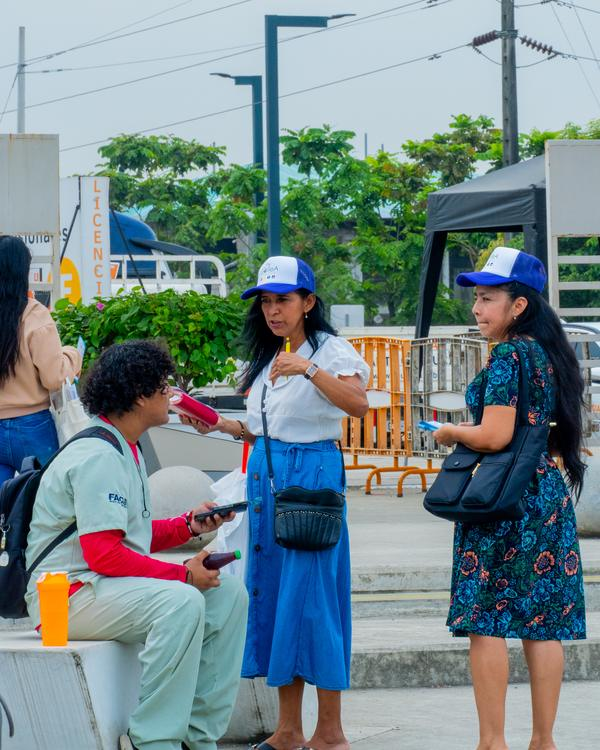
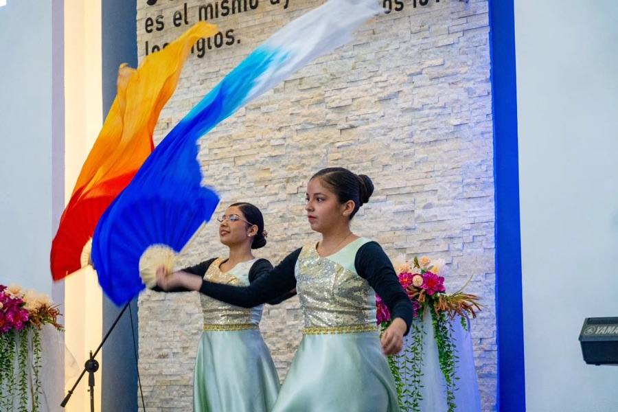
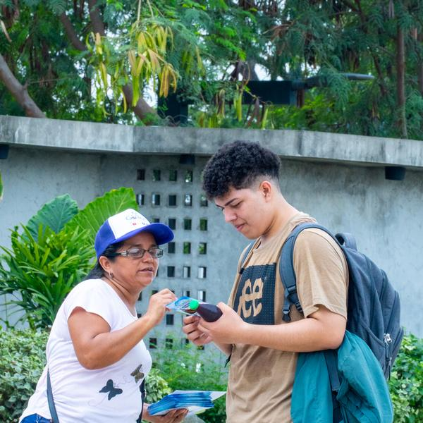
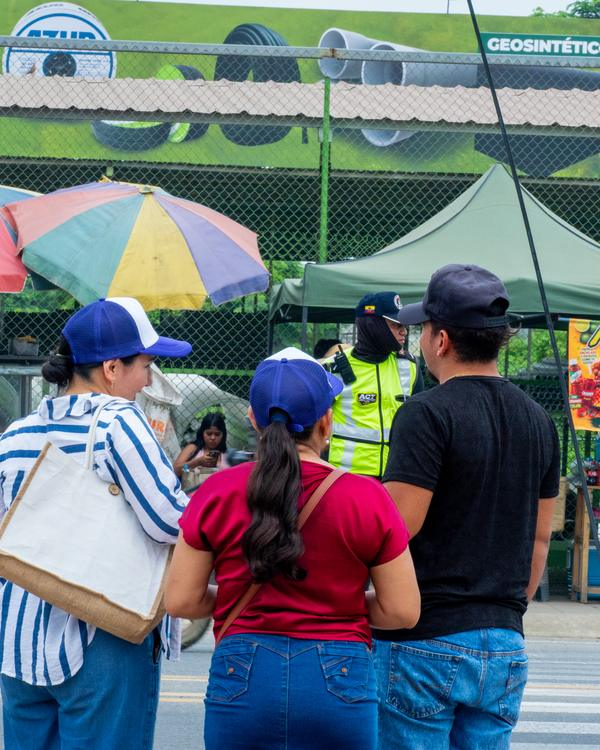


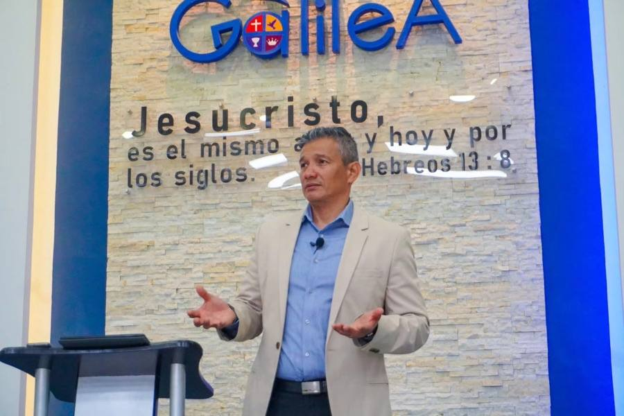
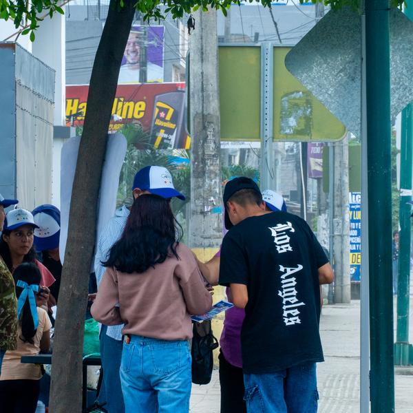
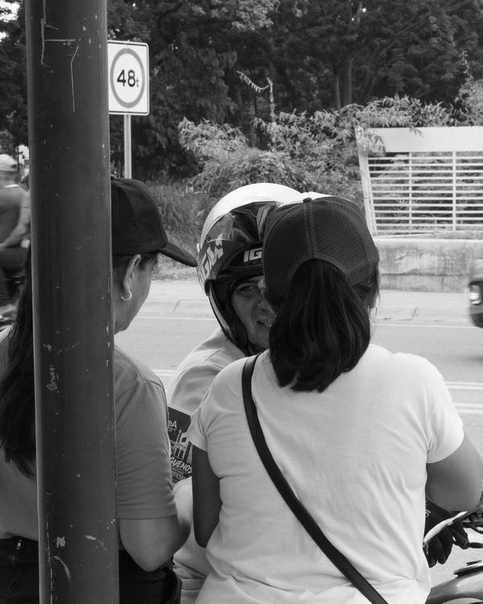
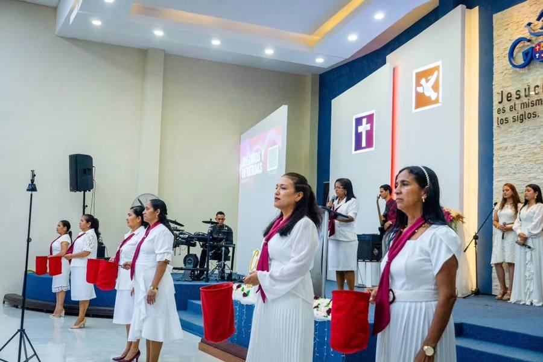

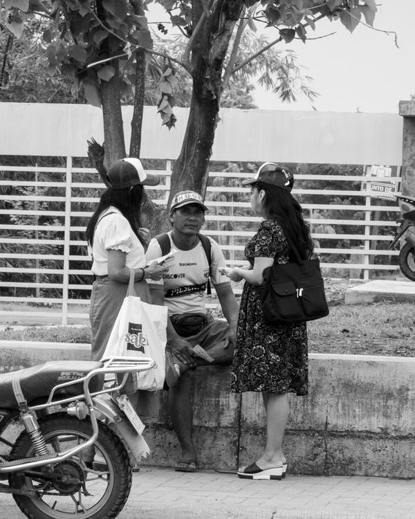

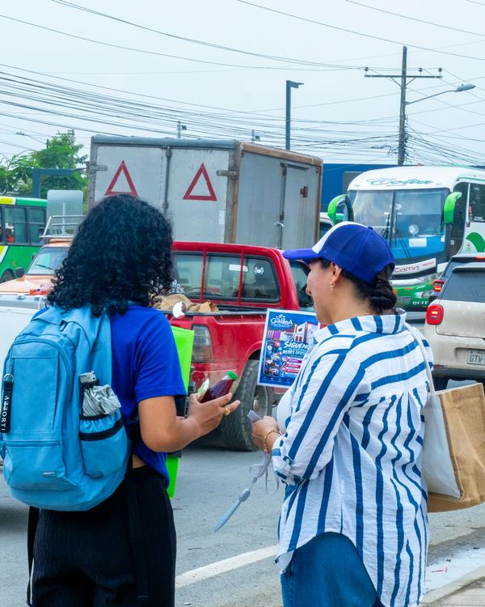

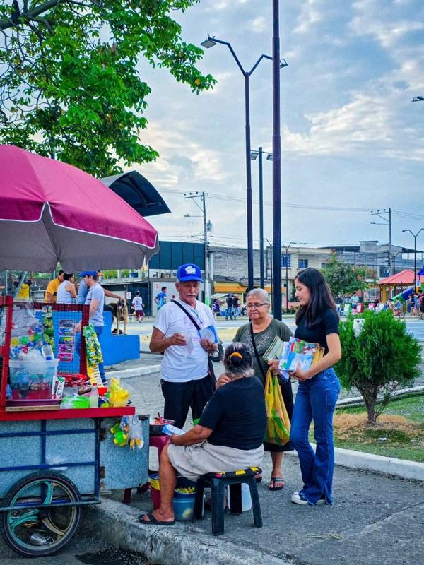
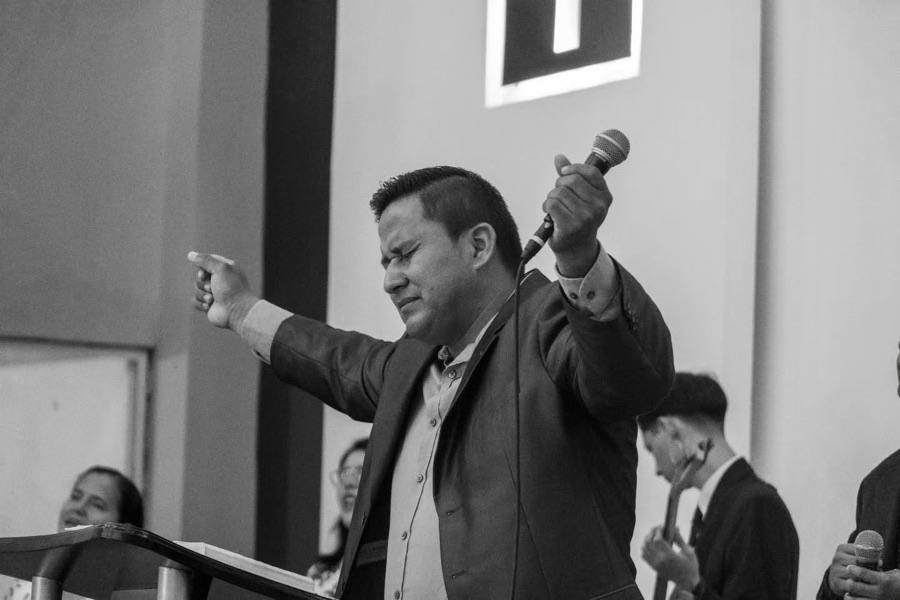
Encuentra rápidamente horarios, ubicación, eventos y mucho más.
Consulta los días y horas de nuestros servicios dominicales y entre semana.
Ver horariosActividades para toda la familia durante todo el año.